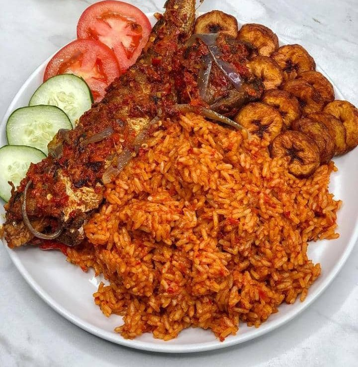

Joolof Rice

Description
This is a Generally accepted Nigerian Meal, can be found in most restaurants, parties, and gatherings, one of the best meal that the Wonderful West African Country has to offer
- 4 cups of Rice
- Scotch Bonnet Pepper, chopped
- A white or Purple Onion, diced or chopped
- For Some Greens like Grean Bean, Carrots and Green Bell Pepper
- 8 tomatoes, diced oor chopped
- salt and maggi for taste
Steps
- Get your Pot or Pan and put it on your preferred source of heat
- Add your oil to the pan and add your chopped or diced tomatoes ad fry, add your onions and stir, add your pepper and stir
- cover pot and allow the ingridients to simmer on low heat
- add water or Meat stock if available
- add rice and allow to cook on low heat, allow this to simmer on low heat, turn off your source of heat and serve with Yam,Plantain or chips and a cool chilled drink, Enjoy!